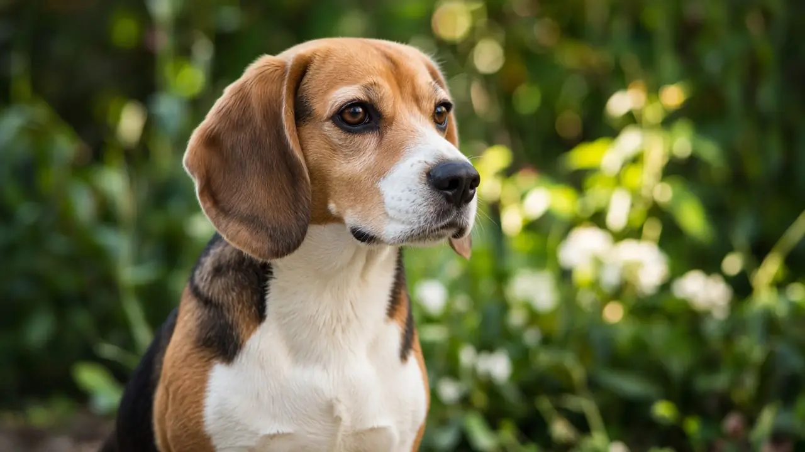

Do dogs understand pointing? Yes, and puppies can do it from about 8 weeks
Most dogs follow a human pointing gesture to find hidden food, and they do it without special training. A 2021 study of 375 eight-week-old puppies found they were highly skilled at using human gestures, with no sign that they needed to learn it, and that over 40% of the variation in point following was down to genes. Wolf puppies raised by people do much worse, which points to domestication shaping this skill.

Dogs beat great apes and hand-raised wolves
In a 2002 Science paper, Brian Hare and colleagues noted that dogs are more skilful than great apes at tasks where they must read human signals, such as pointing or looking, to find hidden food. In their experiments, wolves raised by humans did not show the same skills, while domestic puppies only a few weeks old did, even puppies that had had little human contact. The authors concluded that domestication selected dogs for social thinking skills that let them communicate with people in unusual ways.
Puppies follow points before they could have learned it
In 2021, Emily Bray, Evan MacLean and colleagues tested 375 puppies at 8 weeks old, all from an assistance dog breeding programme, on a set of social tasks. The puppies were highly skilled at using a range of human gestures, and the researchers found no evidence that their performance depended on learning. Because the puppies' family trees were known, the team could estimate heritability: over 40% of the variation in point following and in attention to human faces was linked to genetic factors.
Dog puppies versus wolf puppies
A companion 2021 study led by Hannah Salomons and Brian Hare compared 44 dog puppies and 37 wolf puppies aged 5 to 18 weeks. The wolf puppies were raised with intensive human contact. Dog puppies were more attracted to people, read human gestures more skilfully and made more eye contact with humans than the wolf puppies. On tasks that did not involve people, such as memory and self control, the two species performed similarly. The authors say this fits the idea that domestication boosted dogs' ability to cooperate and communicate with humans.
What this means for owners
- Pointing is a ready-made training tool. Most dogs already follow a clear point, so you can use it to direct your dog to a toy, a mat or a dropped treat, then reward the result (see reward based training).
- Dogs differ. Since part of the skill is inherited, some dogs follow points more easily than others. A dog that struggles is not being stubborn. Make the gesture bigger, get closer to the target and reward small successes.
- Get your dog's attention first. Say your dog's name or make eye contact before you point, then point clearly and hold it for a moment.
- Watch what your dog tells you back. Dogs read our signals closely, and theirs are worth reading too (see dog behavior and why dogs tilt their heads).
Frequently asked questions
Do dogs understand pointing?
Most do. Studies show dogs follow human pointing to find hidden food far better than great apes or hand-raised wolves, and puppies can do it by 8 weeks old.
Do puppies need to learn to follow a point?
Apparently not. A 2021 Current Biology study of 375 eight-week-old puppies found they were highly skilled at using human gestures and found no evidence their performance required learning.
Is following a point genetic in dogs?
Partly. The same 2021 study found over 40% of the variation in puppies' point following and attention to human faces was attributable to genetic factors.
Can wolves follow human pointing?
Not as well as dogs. In 2002 and 2021 studies, wolves raised by people did worse than dog puppies at reading human gestures, while doing about as well on non-social tasks.
Sources
- Hare B, Brown M, Williamson C, Tomasello M (2002). The domestication of social cognition in dogs. Science 298(5598): 1634-1636. DOI 10.1126/science.1072702, Science
- Bray EE, Gnanadesikan GE, Horschler DJ, Levy KM, Kennedy BS, Famula TR, MacLean EL (2021). Early-emerging and highly heritable sensitivity to human communication in dogs. Current Biology 31(14): 3132-3136. DOI 10.1016/j.cub.2021.04.055, Current Biology
- Salomons H, Smith KCM, Callahan-Beckel M, et al. (2021). Cooperative communication with humans evolved to emerge early in domestic dogs. Current Biology 31(14): 3137-3144. DOI 10.1016/j.cub.2021.06.051, Current Biology (free full text via PubMed Central)
General education only, not veterinary advice. If you are worried about your dog, contact your vet; in an emergency, contact an emergency vet straight away.